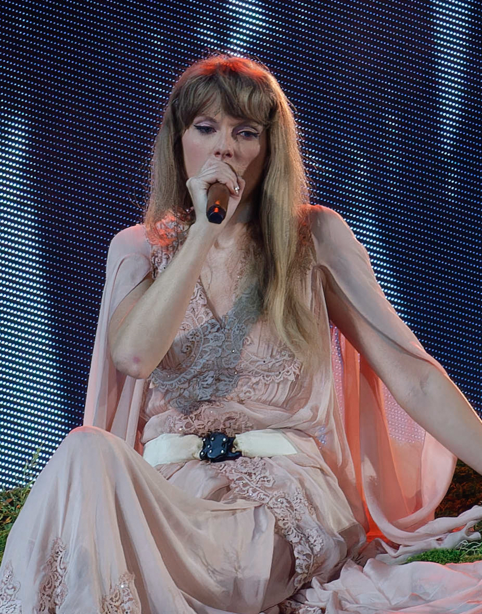

Bem-vindo ao meu site sobre a Taylor Swift
Taylor Swift é uma renomada cantora, compositora e atriz norte-americana, nascida em 1989. Ela ganhou proeminência na indústria musical ao se destacar no gênero country, mas rapidamente expandiu seu alcance para a música pop. Ao longo de sua carreira, Swift conquistou uma base de fãs leais e colecionou uma série de prêmios, incluindo Grammy Awards. Sua música frequentemente aborda temas pessoais e relacionamentos, e ela é conhecida por suas letras sinceras e cativantes. Além da música, Swift também se envolveu em questões sociais e políticas, usando sua influência para promover mudanças positivas.
Swift também é reconhecida por sua evolução artística e sua capacidade de se reinventar, mantendo-se relevante em uma indústria em constante mudança. Sua carreira abrange álbuns de sucesso como "Fearless", "1989", "Red" e "Folklore", cada um demonstrando sua versatilidade musical e habilidades de composição. Seu impacto na cultura pop e sua dedicação tanto à música quanto a causas sociais a tornaram uma figura influente e inspiradora para muitos fãs ao redor do mundo.
